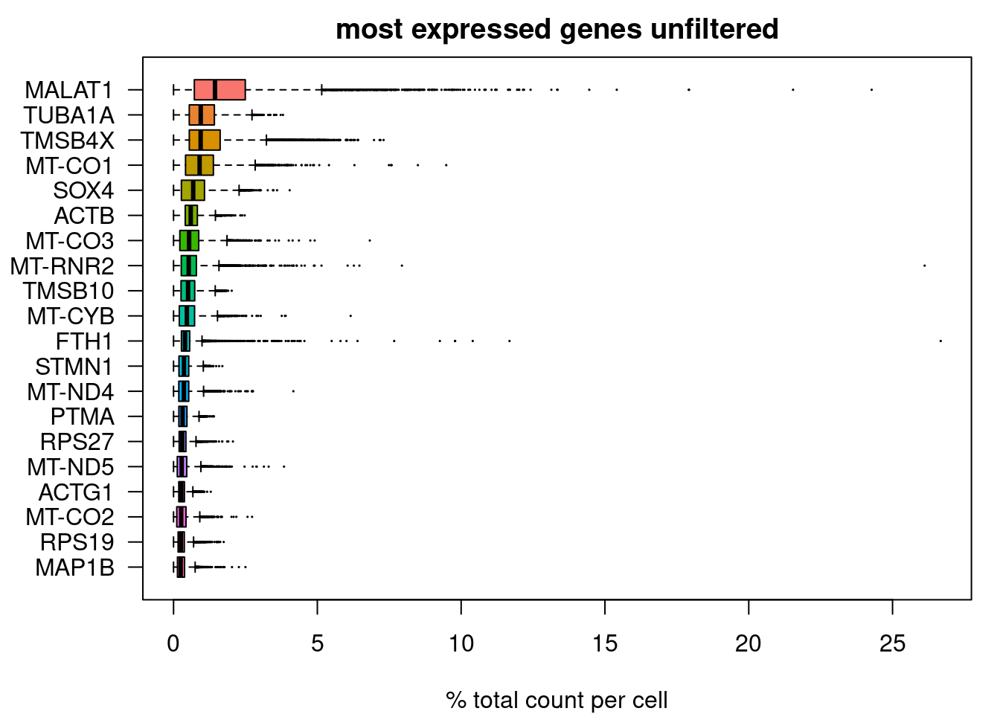
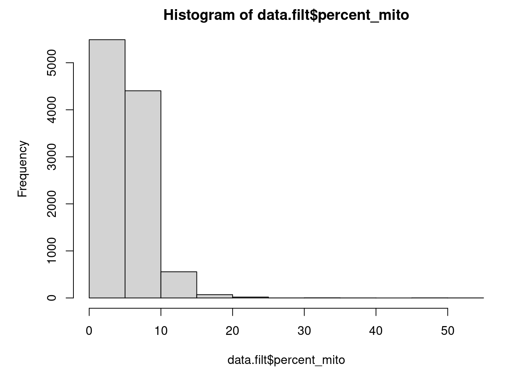
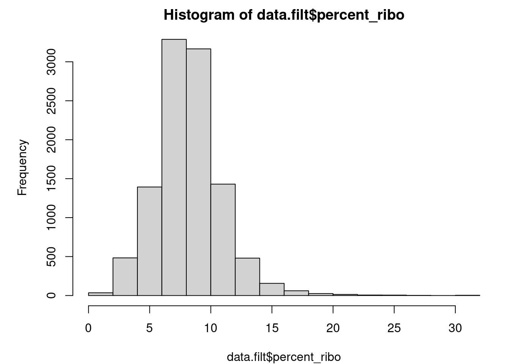
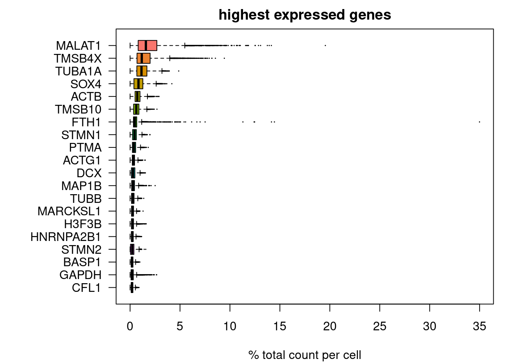

QC
Afsheen
2023-01-11
Last updated: 2024-01-09
Checks: 5 2
Knit directory: files/
This reproducible R Markdown analysis was created with workflowr (version 1.7.1). The Checks tab describes the reproducibility checks that were applied when the results were created. The Past versions tab lists the development history.
The R Markdown file has unstaged changes. To know which version of
the R Markdown file created these results, you’ll want to first commit
it to the Git repo. If you’re still working on the analysis, you can
ignore this warning. When you’re finished, you can run
wflow_publish to commit the R Markdown file and build the
HTML.
Great job! The global environment was empty. Objects defined in the global environment can affect the analysis in your R Markdown file in unknown ways. For reproduciblity it’s best to always run the code in an empty environment.
The command set.seed(20240103) was run prior to running
the code in the R Markdown file. Setting a seed ensures that any results
that rely on randomness, e.g. subsampling or permutations, are
reproducible.
Great job! Recording the operating system, R version, and package versions is critical for reproducibility.
Nice! There were no cached chunks for this analysis, so you can be confident that you successfully produced the results during this run.
Using absolute paths to the files within your workflowr project makes it difficult for you and others to run your code on a different machine. Change the absolute path(s) below to the suggested relative path(s) to make your code more reproducible.
| absolute | relative |
|---|---|
| /files/output/01_QC/QC_12PCs.svg | output/01_QC/QC_12PCs.svg |
| /files/output/01_QC/QC_clustering_PCAoptimized.svg | output/01_QC/QC_clustering_PCAoptimized.svg |
Great! You are using Git for version control. Tracking code development and connecting the code version to the results is critical for reproducibility.
The results in this page were generated with repository version fcad0e3. See the Past versions tab to see a history of the changes made to the R Markdown and HTML files.
Note that you need to be careful to ensure that all relevant files for
the analysis have been committed to Git prior to generating the results
(you can use wflow_publish or
wflow_git_commit). workflowr only checks the R Markdown
file, but you know if there are other scripts or data files that it
depends on. Below is the status of the Git repository when the results
were generated:
Ignored files:
Ignored: .Rhistory
Ignored: .Rprofile
Ignored: .Rproj.user/
Ignored: analysis/figure/
Ignored: output/05_Bulk_DEX/
Ignored: output/05_Bulk_Preprocessing/
Untracked files:
Untracked: .bashrc
Untracked: .nuvolos/
Untracked: analysis/02_01_Clustering_scRNA.Rmd
Untracked: analysis/02_02_Clustering_Mapping_scRNA.Rmd
Untracked: analysis/05_Preprocessing_Bulk.Rmd
Untracked: analysis/06_DEX_Bulk.Rmd
Untracked: code/custom_functions.R
Untracked: core.10568
Untracked: data/Bulk_dds_matrix.rds
Untracked: data/Bulkdata_Countmatrix.rds
Untracked: data/HumDev/
Untracked: data/Kanton/
Untracked: data/KantonGeneList/
Untracked: data/Knoblich/
Untracked: data/QC_data.filt.rds
Untracked: data/QC_dataClustered.filt.rds
Untracked: data/QC_dataClustered.filtTyped.rds
Untracked: data/Yoon/
Untracked: data/alldata.rds
Untracked: output/01_QC/QC_measures_Violin_filtered.svg
Untracked: output/02_Clustering/Clustering_Hum_devCellDevTypeClusterCounts.svg
Untracked: output/02_Clustering/Clustering_Hum_devFullDetailsMapped.svg
Untracked: output/02_Clustering/Clustering_Hum_devScore_Hum_dev.scores.HsapDv.0000099_b.Erythrocyte..svg
Untracked: output/02_Clustering/Clustering_Hum_devScore_Hum_dev.scores.HsapDv.0000099_b.Fibroblast..svg
Untracked: output/02_Clustering/Clustering_Hum_devScore_Hum_dev.scores.HsapDv.0000099_b.Glioblast..svg
Untracked: output/02_Clustering/Clustering_Hum_devScore_Hum_dev.scores.HsapDv.0000099_b.Immune..svg
Untracked: output/02_Clustering/Clustering_Hum_devScore_Hum_dev.scores.HsapDv.0000099_b.Neural.crest..svg
Untracked: output/02_Clustering/Clustering_Hum_devScore_Hum_dev.scores.HsapDv.0000099_b.Neuroblast..svg
Untracked: output/02_Clustering/Clustering_Hum_devScore_Hum_dev.scores.HsapDv.0000099_b.Neuron..svg
Untracked: output/02_Clustering/Clustering_Hum_devScore_Hum_dev.scores.HsapDv.0000099_b.Neuronal.IPC..svg
Untracked: output/02_Clustering/Clustering_Hum_devScore_Hum_dev.scores.HsapDv.0000099_b.Oligo..svg
Untracked: output/02_Clustering/Clustering_Hum_devScore_Hum_dev.scores.HsapDv.0000099_b.Placodes..svg
Untracked: output/02_Clustering/Clustering_Hum_devScore_Hum_dev.scores.HsapDv.0000099_b.Radial.glia..svg
Untracked: output/02_Clustering/Clustering_Hum_devScore_Hum_dev.scores.HsapDv.0000099_b.Vascular..svg
Untracked: output/02_Clustering/Clustering_Hum_devScore_Hum_dev.scores.HsapDv.0000100_b.Erythrocyte..svg
Untracked: output/02_Clustering/Clustering_Hum_devScore_Hum_dev.scores.HsapDv.0000100_b.Fibroblast..svg
Untracked: output/02_Clustering/Clustering_Hum_devScore_Hum_dev.scores.HsapDv.0000100_b.Glioblast..svg
Untracked: output/02_Clustering/Clustering_Hum_devScore_Hum_dev.scores.HsapDv.0000100_b.Immune..svg
Untracked: output/02_Clustering/Clustering_Hum_devScore_Hum_dev.scores.HsapDv.0000100_b.Neural.crest..svg
Untracked: output/02_Clustering/Clustering_Hum_devScore_Hum_dev.scores.HsapDv.0000100_b.Neuroblast..svg
Untracked: output/02_Clustering/Clustering_Hum_devScore_Hum_dev.scores.HsapDv.0000100_b.Neuron..svg
Untracked: output/02_Clustering/Clustering_Hum_devScore_Hum_dev.scores.HsapDv.0000100_b.Neuronal.IPC..svg
Untracked: output/02_Clustering/Clustering_Hum_devScore_Hum_dev.scores.HsapDv.0000100_b.Oligo..svg
Untracked: output/02_Clustering/Clustering_Hum_devScore_Hum_dev.scores.HsapDv.0000100_b.Placodes..svg
Untracked: output/02_Clustering/Clustering_Hum_devScore_Hum_dev.scores.HsapDv.0000100_b.Radial.glia..svg
Untracked: output/02_Clustering/Clustering_Hum_devScore_Hum_dev.scores.HsapDv.0000100_b.Vascular..svg
Untracked: output/02_Clustering/Clustering_Hum_devScore_Hum_dev.scores.HsapDv.0000101_b.Erythrocyte..svg
Untracked: output/02_Clustering/Clustering_Hum_devScore_Hum_dev.scores.HsapDv.0000101_b.Glioblast..svg
Untracked: output/02_Clustering/Clustering_Hum_devScore_Hum_dev.scores.HsapDv.0000101_b.Immune..svg
Untracked: output/02_Clustering/Clustering_Hum_devScore_Hum_dev.scores.HsapDv.0000101_b.Neuroblast..svg
Untracked: output/02_Clustering/Clustering_Hum_devScore_Hum_dev.scores.HsapDv.0000101_b.Neuron..svg
Untracked: output/02_Clustering/Clustering_Hum_devScore_Hum_dev.scores.HsapDv.0000101_b.Neuronal.IPC..svg
Untracked: output/02_Clustering/Clustering_Hum_devScore_Hum_dev.scores.HsapDv.0000101_b.Oligo..svg
Untracked: output/02_Clustering/Clustering_Hum_devScore_Hum_dev.scores.HsapDv.0000101_b.Radial.glia..svg
Untracked: output/02_Clustering/Clustering_Hum_devScore_Hum_dev.scores.HsapDv.0000101_b.Vascular..svg
Untracked: output/02_Clustering/Clustering_Hum_devScore_Hum_dev.scores.HsapDv.0000102_b.Erythrocyte..svg
Untracked: output/02_Clustering/Clustering_Hum_devScore_Hum_dev.scores.HsapDv.0000102_b.Fibroblast..svg
Untracked: output/02_Clustering/Clustering_Hum_devScore_Hum_dev.scores.HsapDv.0000102_b.Glioblast..svg
Untracked: output/02_Clustering/Clustering_Hum_devScore_Hum_dev.scores.HsapDv.0000102_b.Immune..svg
Untracked: output/02_Clustering/Clustering_Hum_devScore_Hum_dev.scores.HsapDv.0000102_b.Neural.crest..svg
Untracked: output/02_Clustering/Clustering_Hum_devScore_Hum_dev.scores.HsapDv.0000102_b.Neuroblast..svg
Untracked: output/02_Clustering/Clustering_Hum_devScore_Hum_dev.scores.HsapDv.0000102_b.Neuron..svg
Untracked: output/02_Clustering/Clustering_Hum_devScore_Hum_dev.scores.HsapDv.0000102_b.Neuronal.IPC..svg
Untracked: output/02_Clustering/Clustering_Hum_devScore_Hum_dev.scores.HsapDv.0000102_b.Oligo..svg
Untracked: output/02_Clustering/Clustering_Hum_devScore_Hum_dev.scores.HsapDv.0000102_b.Placodes..svg
Untracked: output/02_Clustering/Clustering_Hum_devScore_Hum_dev.scores.HsapDv.0000102_b.Radial.glia..svg
Untracked: output/02_Clustering/Clustering_Hum_devScore_Hum_dev.scores.HsapDv.0000102_b.Vascular..svg
Untracked: output/02_Clustering/Clustering_Hum_devScore_Hum_dev.scores.HsapDv.0000103_b.Erythrocyte..svg
Untracked: output/02_Clustering/Clustering_Hum_devScore_Hum_dev.scores.HsapDv.0000103_b.Fibroblast..svg
Untracked: output/02_Clustering/Clustering_Hum_devScore_Hum_dev.scores.HsapDv.0000103_b.Glioblast..svg
Untracked: output/02_Clustering/Clustering_Hum_devScore_Hum_dev.scores.HsapDv.0000103_b.Immune..svg
Untracked: output/02_Clustering/Clustering_Hum_devScore_Hum_dev.scores.HsapDv.0000103_b.Neural.crest..svg
Untracked: output/02_Clustering/Clustering_Hum_devScore_Hum_dev.scores.HsapDv.0000103_b.Neuroblast..svg
Untracked: output/02_Clustering/Clustering_Hum_devScore_Hum_dev.scores.HsapDv.0000103_b.Neuron..svg
Untracked: output/02_Clustering/Clustering_Hum_devScore_Hum_dev.scores.HsapDv.0000103_b.Neuronal.IPC..svg
Untracked: output/02_Clustering/Clustering_Hum_devScore_Hum_dev.scores.HsapDv.0000103_b.Oligo..svg
Untracked: output/02_Clustering/Clustering_Hum_devScore_Hum_dev.scores.HsapDv.0000103_b.Placodes..svg
Untracked: output/02_Clustering/Clustering_Hum_devScore_Hum_dev.scores.HsapDv.0000103_b.Radial.glia..svg
Untracked: output/02_Clustering/Clustering_Hum_devScore_Hum_dev.scores.HsapDv.0000103_b.Vascular..svg
Untracked: output/02_Clustering/Clustering_Hum_devScore_Hum_dev.scores.HsapDv.0000104_b.Erythrocyte..svg
Untracked: output/02_Clustering/Clustering_Hum_devScore_Hum_dev.scores.HsapDv.0000104_b.Glioblast..svg
Untracked: output/02_Clustering/Clustering_Hum_devScore_Hum_dev.scores.HsapDv.0000104_b.Immune..svg
Untracked: output/02_Clustering/Clustering_Hum_devScore_Hum_dev.scores.HsapDv.0000104_b.Neuroblast..svg
Untracked: output/02_Clustering/Clustering_Hum_devScore_Hum_dev.scores.HsapDv.0000104_b.Neuron..svg
Untracked: output/02_Clustering/Clustering_Hum_devScore_Hum_dev.scores.HsapDv.0000104_b.Neuronal.IPC..svg
Untracked: output/02_Clustering/Clustering_Hum_devScore_Hum_dev.scores.HsapDv.0000104_b.Oligo..svg
Untracked: output/02_Clustering/Clustering_Hum_devScore_Hum_dev.scores.HsapDv.0000104_b.Radial.glia..svg
Untracked: output/02_Clustering/Clustering_Hum_devScore_Hum_dev.scores.HsapDv.0000104_b.Vascular..svg
Untracked: output/02_Clustering/Clustering_Hum_devScore_Hum_dev.scores.HsapDv.0000105_b.Erythrocyte..svg
Untracked: output/02_Clustering/Clustering_Hum_devScore_Hum_dev.scores.HsapDv.0000105_b.Fibroblast..svg
Untracked: output/02_Clustering/Clustering_Hum_devScore_Hum_dev.scores.HsapDv.0000105_b.Glioblast..svg
Untracked: output/02_Clustering/Clustering_Hum_devScore_Hum_dev.scores.HsapDv.0000105_b.Immune..svg
Untracked: output/02_Clustering/Clustering_Hum_devScore_Hum_dev.scores.HsapDv.0000105_b.Neural.crest..svg
Untracked: output/02_Clustering/Clustering_Hum_devScore_Hum_dev.scores.HsapDv.0000105_b.Neuroblast..svg
Untracked: output/02_Clustering/Clustering_Hum_devScore_Hum_dev.scores.HsapDv.0000105_b.Neuron..svg
Untracked: output/02_Clustering/Clustering_Hum_devScore_Hum_dev.scores.HsapDv.0000105_b.Neuronal.IPC..svg
Untracked: output/02_Clustering/Clustering_Hum_devScore_Hum_dev.scores.HsapDv.0000105_b.Oligo..svg
Untracked: output/02_Clustering/Clustering_Hum_devScore_Hum_dev.scores.HsapDv.0000105_b.Radial.glia..svg
Untracked: output/02_Clustering/Clustering_Hum_devScore_Hum_dev.scores.HsapDv.0000105_b.Vascular..svg
Untracked: output/02_Clustering/Clustering_Hum_devScore_Hum_dev.scores.HsapDv.0000106_b.Erythrocyte..svg
Untracked: output/02_Clustering/Clustering_Hum_devScore_Hum_dev.scores.HsapDv.0000106_b.Fibroblast..svg
Untracked: output/02_Clustering/Clustering_Hum_devScore_Hum_dev.scores.HsapDv.0000106_b.Glioblast..svg
Untracked: output/02_Clustering/Clustering_Hum_devScore_Hum_dev.scores.HsapDv.0000106_b.Immune..svg
Untracked: output/02_Clustering/Clustering_Hum_devScore_Hum_dev.scores.HsapDv.0000106_b.Neural.crest..svg
Untracked: output/02_Clustering/Clustering_Hum_devScore_Hum_dev.scores.HsapDv.0000106_b.Neuroblast..svg
Untracked: output/02_Clustering/Clustering_Hum_devScore_Hum_dev.scores.HsapDv.0000106_b.Neuron..svg
Untracked: output/02_Clustering/Clustering_Hum_devScore_Hum_dev.scores.HsapDv.0000106_b.Neuronal.IPC..svg
Untracked: output/02_Clustering/Clustering_Hum_devScore_Hum_dev.scores.HsapDv.0000106_b.Oligo..svg
Untracked: output/02_Clustering/Clustering_Hum_devScore_Hum_dev.scores.HsapDv.0000106_b.Radial.glia..svg
Untracked: output/02_Clustering/Clustering_Hum_devScore_Hum_dev.scores.HsapDv.0000106_b.Vascular..svg
Untracked: output/02_Clustering/Clustering_Hum_devScore_Hum_dev.scores.HsapDv.0000107_b.Erythrocyte..svg
Untracked: output/02_Clustering/Clustering_Hum_devScore_Hum_dev.scores.HsapDv.0000107_b.Fibroblast..svg
Untracked: output/02_Clustering/Clustering_Hum_devScore_Hum_dev.scores.HsapDv.0000107_b.Glioblast..svg
Untracked: output/02_Clustering/Clustering_Hum_devScore_Hum_dev.scores.HsapDv.0000107_b.Immune..svg
Untracked: output/02_Clustering/Clustering_Hum_devScore_Hum_dev.scores.HsapDv.0000107_b.Neural.crest..svg
Untracked: output/02_Clustering/Clustering_Hum_devScore_Hum_dev.scores.HsapDv.0000107_b.Neuroblast..svg
Untracked: output/02_Clustering/Clustering_Hum_devScore_Hum_dev.scores.HsapDv.0000107_b.Neuron..svg
Untracked: output/02_Clustering/Clustering_Hum_devScore_Hum_dev.scores.HsapDv.0000107_b.Neuronal.IPC..svg
Untracked: output/02_Clustering/Clustering_Hum_devScore_Hum_dev.scores.HsapDv.0000107_b.Oligo..svg
Untracked: output/02_Clustering/Clustering_Hum_devScore_Hum_dev.scores.HsapDv.0000107_b.Radial.glia..svg
Untracked: output/02_Clustering/Clustering_Hum_devScore_Hum_dev.scores.HsapDv.0000107_b.Vascular..svg
Untracked: output/02_Clustering/Clustering_Hum_devScore_Hum_dev.scores.HsapDv.0000108_b.Erythrocyte..svg
Untracked: output/02_Clustering/Clustering_Hum_devScore_Hum_dev.scores.HsapDv.0000108_b.Fibroblast..svg
Untracked: output/02_Clustering/Clustering_Hum_devScore_Hum_dev.scores.HsapDv.0000108_b.Glioblast..svg
Untracked: output/02_Clustering/Clustering_Hum_devScore_Hum_dev.scores.HsapDv.0000108_b.Immune..svg
Untracked: output/02_Clustering/Clustering_Hum_devScore_Hum_dev.scores.HsapDv.0000108_b.Neural.crest..svg
Untracked: output/02_Clustering/Clustering_Hum_devScore_Hum_dev.scores.HsapDv.0000108_b.Neuroblast..svg
Untracked: output/02_Clustering/Clustering_Hum_devScore_Hum_dev.scores.HsapDv.0000108_b.Neuron..svg
Untracked: output/02_Clustering/Clustering_Hum_devScore_Hum_dev.scores.HsapDv.0000108_b.Neuronal.IPC..svg
Untracked: output/02_Clustering/Clustering_Hum_devScore_Hum_dev.scores.HsapDv.0000108_b.Oligo..svg
Untracked: output/02_Clustering/Clustering_Hum_devScore_Hum_dev.scores.HsapDv.0000108_b.Radial.glia..svg
Untracked: output/02_Clustering/Clustering_Hum_devScore_Hum_dev.scores.HsapDv.0000108_b.Vascular..svg
Untracked: output/02_Clustering/Clustering_Hum_devScore_Hum_dev.scores.HsapDv:0000099_b'Erythrocyte'.svg
Untracked: output/02_Clustering/Clustering_Hum_devScore_Hum_dev.scores.HsapDv:0000099_b'Fibroblast'.svg
Untracked: output/02_Clustering/Clustering_Hum_devScore_Hum_dev.scores.HsapDv:0000099_b'Glioblast'.svg
Untracked: output/02_Clustering/Clustering_Hum_devScore_Hum_dev.scores.HsapDv:0000099_b'Immune'.svg
Untracked: output/02_Clustering/Clustering_Hum_devScore_Hum_dev.scores.HsapDv:0000099_b'Neural crest'.svg
Untracked: output/02_Clustering/Clustering_Hum_devScore_Hum_dev.scores.HsapDv:0000099_b'Neuroblast'.svg
Untracked: output/02_Clustering/Clustering_Hum_devScore_Hum_dev.scores.HsapDv:0000099_b'Neuron'.svg
Untracked: output/02_Clustering/Clustering_Hum_devScore_Hum_dev.scores.HsapDv:0000099_b'Neuronal IPC'.svg
Untracked: output/02_Clustering/Clustering_Hum_devScore_Hum_dev.scores.HsapDv:0000099_b'Oligo'.svg
Untracked: output/02_Clustering/Clustering_Hum_devScore_Hum_dev.scores.HsapDv:0000099_b'Placodes'.svg
Untracked: output/02_Clustering/Clustering_Hum_devScore_Hum_dev.scores.HsapDv:0000099_b'Radial glia'.svg
Untracked: output/02_Clustering/Clustering_Hum_devScore_Hum_dev.scores.HsapDv:0000099_b'Vascular'.svg
Untracked: output/02_Clustering/Clustering_Hum_devScore_Hum_dev.scores.HsapDv:0000100_b'Erythrocyte'.svg
Untracked: output/02_Clustering/Clustering_Hum_devScore_Hum_dev.scores.HsapDv:0000100_b'Fibroblast'.svg
Untracked: output/02_Clustering/Clustering_Hum_devScore_Hum_dev.scores.HsapDv:0000100_b'Glioblast'.svg
Untracked: output/02_Clustering/Clustering_Hum_devScore_Hum_dev.scores.HsapDv:0000100_b'Immune'.svg
Untracked: output/02_Clustering/Clustering_Hum_devScore_Hum_dev.scores.HsapDv:0000100_b'Neural crest'.svg
Untracked: output/02_Clustering/Clustering_Hum_devScore_Hum_dev.scores.HsapDv:0000100_b'Neuroblast'.svg
Untracked: output/02_Clustering/Clustering_Hum_devScore_Hum_dev.scores.HsapDv:0000100_b'Neuron'.svg
Untracked: output/02_Clustering/Clustering_Hum_devScore_Hum_dev.scores.HsapDv:0000100_b'Neuronal IPC'.svg
Untracked: output/02_Clustering/Clustering_Hum_devScore_Hum_dev.scores.HsapDv:0000100_b'Oligo'.svg
Untracked: output/02_Clustering/Clustering_Hum_devScore_Hum_dev.scores.HsapDv:0000100_b'Placodes'.svg
Untracked: output/02_Clustering/Clustering_Hum_devScore_Hum_dev.scores.HsapDv:0000100_b'Radial glia'.svg
Untracked: output/02_Clustering/Clustering_Hum_devScore_Hum_dev.scores.HsapDv:0000100_b'Vascular'.svg
Untracked: output/02_Clustering/Clustering_Hum_devScore_Hum_dev.scores.HsapDv:0000101_b'Erythrocyte'.svg
Untracked: output/02_Clustering/Clustering_Hum_devScore_Hum_dev.scores.HsapDv:0000101_b'Glioblast'.svg
Untracked: output/02_Clustering/Clustering_Hum_devScore_Hum_dev.scores.HsapDv:0000101_b'Immune'.svg
Untracked: output/02_Clustering/Clustering_Hum_devScore_Hum_dev.scores.HsapDv:0000101_b'Neuroblast'.svg
Untracked: output/02_Clustering/Clustering_Hum_devScore_Hum_dev.scores.HsapDv:0000101_b'Neuron'.svg
Untracked: output/02_Clustering/Clustering_Hum_devScore_Hum_dev.scores.HsapDv:0000101_b'Neuronal IPC'.svg
Untracked: output/02_Clustering/Clustering_Hum_devScore_Hum_dev.scores.HsapDv:0000101_b'Oligo'.svg
Untracked: output/02_Clustering/Clustering_Hum_devScore_Hum_dev.scores.HsapDv:0000101_b'Radial glia'.svg
Untracked: output/02_Clustering/Clustering_Hum_devScore_Hum_dev.scores.HsapDv:0000101_b'Vascular'.svg
Untracked: output/02_Clustering/Clustering_Hum_devScore_Hum_dev.scores.HsapDv:0000102_b'Erythrocyte'.svg
Untracked: output/02_Clustering/Clustering_Hum_devScore_Hum_dev.scores.HsapDv:0000102_b'Fibroblast'.svg
Untracked: output/02_Clustering/Clustering_Hum_devScore_Hum_dev.scores.HsapDv:0000102_b'Glioblast'.svg
Untracked: output/02_Clustering/Clustering_Hum_devScore_Hum_dev.scores.HsapDv:0000102_b'Immune'.svg
Untracked: output/02_Clustering/Clustering_Hum_devScore_Hum_dev.scores.HsapDv:0000102_b'Neural crest'.svg
Untracked: output/02_Clustering/Clustering_Hum_devScore_Hum_dev.scores.HsapDv:0000102_b'Neuroblast'.svg
Untracked: output/02_Clustering/Clustering_Hum_devScore_Hum_dev.scores.HsapDv:0000102_b'Neuron'.svg
Untracked: output/02_Clustering/Clustering_Hum_devScore_Hum_dev.scores.HsapDv:0000102_b'Neuronal IPC'.svg
Untracked: output/02_Clustering/Clustering_Hum_devScore_Hum_dev.scores.HsapDv:0000102_b'Oligo'.svg
Untracked: output/02_Clustering/Clustering_Hum_devScore_Hum_dev.scores.HsapDv:0000102_b'Placodes'.svg
Untracked: output/02_Clustering/Clustering_Hum_devScore_Hum_dev.scores.HsapDv:0000102_b'Radial glia'.svg
Untracked: output/02_Clustering/Clustering_Hum_devScore_Hum_dev.scores.HsapDv:0000102_b'Vascular'.svg
Untracked: output/02_Clustering/Clustering_Hum_devScore_Hum_dev.scores.HsapDv:0000103_b'Erythrocyte'.svg
Untracked: output/02_Clustering/Clustering_Hum_devScore_Hum_dev.scores.HsapDv:0000103_b'Fibroblast'.svg
Untracked: output/02_Clustering/Clustering_Hum_devScore_Hum_dev.scores.HsapDv:0000103_b'Glioblast'.svg
Untracked: output/02_Clustering/Clustering_Hum_devScore_Hum_dev.scores.HsapDv:0000103_b'Immune'.svg
Untracked: output/02_Clustering/Clustering_Hum_devScore_Hum_dev.scores.HsapDv:0000103_b'Neural crest'.svg
Untracked: output/02_Clustering/Clustering_Hum_devScore_Hum_dev.scores.HsapDv:0000103_b'Neuroblast'.svg
Untracked: output/02_Clustering/Clustering_Hum_devScore_Hum_dev.scores.HsapDv:0000103_b'Neuron'.svg
Untracked: output/02_Clustering/Clustering_Hum_devScore_Hum_dev.scores.HsapDv:0000103_b'Neuronal IPC'.svg
Untracked: output/02_Clustering/Clustering_Hum_devScore_Hum_dev.scores.HsapDv:0000103_b'Oligo'.svg
Untracked: output/02_Clustering/Clustering_Hum_devScore_Hum_dev.scores.HsapDv:0000103_b'Placodes'.svg
Untracked: output/02_Clustering/Clustering_Hum_devScore_Hum_dev.scores.HsapDv:0000103_b'Radial glia'.svg
Untracked: output/02_Clustering/Clustering_Hum_devScore_Hum_dev.scores.HsapDv:0000103_b'Vascular'.svg
Untracked: output/02_Clustering/Clustering_Hum_devScore_Hum_dev.scores.HsapDv:0000104_b'Erythrocyte'.svg
Untracked: output/02_Clustering/Clustering_Hum_devScore_Hum_dev.scores.HsapDv:0000104_b'Glioblast'.svg
Untracked: output/02_Clustering/Clustering_Hum_devScore_Hum_dev.scores.HsapDv:0000104_b'Immune'.svg
Untracked: output/02_Clustering/Clustering_Hum_devScore_Hum_dev.scores.HsapDv:0000104_b'Neuroblast'.svg
Untracked: output/02_Clustering/Clustering_Hum_devScore_Hum_dev.scores.HsapDv:0000104_b'Neuron'.svg
Untracked: output/02_Clustering/Clustering_Hum_devScore_Hum_dev.scores.HsapDv:0000104_b'Neuronal IPC'.svg
Untracked: output/02_Clustering/Clustering_Hum_devScore_Hum_dev.scores.HsapDv:0000104_b'Oligo'.svg
Untracked: output/02_Clustering/Clustering_Hum_devScore_Hum_dev.scores.HsapDv:0000104_b'Radial glia'.svg
Untracked: output/02_Clustering/Clustering_Hum_devScore_Hum_dev.scores.HsapDv:0000104_b'Vascular'.svg
Untracked: output/02_Clustering/Clustering_Hum_devScore_Hum_dev.scores.HsapDv:0000105_b'Erythrocyte'.svg
Untracked: output/02_Clustering/Clustering_Hum_devScore_Hum_dev.scores.HsapDv:0000105_b'Fibroblast'.svg
Untracked: output/02_Clustering/Clustering_Hum_devScore_Hum_dev.scores.HsapDv:0000105_b'Glioblast'.svg
Untracked: output/02_Clustering/Clustering_Hum_devScore_Hum_dev.scores.HsapDv:0000105_b'Immune'.svg
Untracked: output/02_Clustering/Clustering_Hum_devScore_Hum_dev.scores.HsapDv:0000105_b'Neural crest'.svg
Untracked: output/02_Clustering/Clustering_Hum_devScore_Hum_dev.scores.HsapDv:0000105_b'Neuroblast'.svg
Untracked: output/02_Clustering/Clustering_Hum_devScore_Hum_dev.scores.HsapDv:0000105_b'Neuron'.svg
Untracked: output/02_Clustering/Clustering_Hum_devScore_Hum_dev.scores.HsapDv:0000105_b'Neuronal IPC'.svg
Untracked: output/02_Clustering/Clustering_Hum_devScore_Hum_dev.scores.HsapDv:0000105_b'Oligo'.svg
Untracked: output/02_Clustering/Clustering_Hum_devScore_Hum_dev.scores.HsapDv:0000105_b'Radial glia'.svg
Untracked: output/02_Clustering/Clustering_Hum_devScore_Hum_dev.scores.HsapDv:0000105_b'Vascular'.svg
Untracked: output/02_Clustering/Clustering_Hum_devScore_Hum_dev.scores.HsapDv:0000106_b'Erythrocyte'.svg
Untracked: output/02_Clustering/Clustering_Hum_devScore_Hum_dev.scores.HsapDv:0000106_b'Fibroblast'.svg
Untracked: output/02_Clustering/Clustering_Hum_devScore_Hum_dev.scores.HsapDv:0000106_b'Glioblast'.svg
Untracked: output/02_Clustering/Clustering_Hum_devScore_Hum_dev.scores.HsapDv:0000106_b'Immune'.svg
Untracked: output/02_Clustering/Clustering_Hum_devScore_Hum_dev.scores.HsapDv:0000106_b'Neural crest'.svg
Untracked: output/02_Clustering/Clustering_Hum_devScore_Hum_dev.scores.HsapDv:0000106_b'Neuroblast'.svg
Untracked: output/02_Clustering/Clustering_Hum_devScore_Hum_dev.scores.HsapDv:0000106_b'Neuron'.svg
Untracked: output/02_Clustering/Clustering_Hum_devScore_Hum_dev.scores.HsapDv:0000106_b'Neuronal IPC'.svg
Untracked: output/02_Clustering/Clustering_Hum_devScore_Hum_dev.scores.HsapDv:0000106_b'Oligo'.svg
Untracked: output/02_Clustering/Clustering_Hum_devScore_Hum_dev.scores.HsapDv:0000106_b'Radial glia'.svg
Untracked: output/02_Clustering/Clustering_Hum_devScore_Hum_dev.scores.HsapDv:0000106_b'Vascular'.svg
Untracked: output/02_Clustering/Clustering_Hum_devScore_Hum_dev.scores.HsapDv:0000107_b'Erythrocyte'.svg
Untracked: output/02_Clustering/Clustering_Hum_devScore_Hum_dev.scores.HsapDv:0000107_b'Fibroblast'.svg
Untracked: output/02_Clustering/Clustering_Hum_devScore_Hum_dev.scores.HsapDv:0000107_b'Glioblast'.svg
Untracked: output/02_Clustering/Clustering_Hum_devScore_Hum_dev.scores.HsapDv:0000107_b'Immune'.svg
Untracked: output/02_Clustering/Clustering_Hum_devScore_Hum_dev.scores.HsapDv:0000107_b'Neural crest'.svg
Untracked: output/02_Clustering/Clustering_Hum_devScore_Hum_dev.scores.HsapDv:0000107_b'Neuroblast'.svg
Untracked: output/02_Clustering/Clustering_Hum_devScore_Hum_dev.scores.HsapDv:0000107_b'Neuron'.svg
Untracked: output/02_Clustering/Clustering_Hum_devScore_Hum_dev.scores.HsapDv:0000107_b'Neuronal IPC'.svg
Untracked: output/02_Clustering/Clustering_Hum_devScore_Hum_dev.scores.HsapDv:0000107_b'Oligo'.svg
Untracked: output/02_Clustering/Clustering_Hum_devScore_Hum_dev.scores.HsapDv:0000107_b'Radial glia'.svg
Untracked: output/02_Clustering/Clustering_Hum_devScore_Hum_dev.scores.HsapDv:0000107_b'Vascular'.svg
Untracked: output/02_Clustering/Clustering_Hum_devScore_Hum_dev.scores.HsapDv:0000108_b'Erythrocyte'.svg
Untracked: output/02_Clustering/Clustering_Hum_devScore_Hum_dev.scores.HsapDv:0000108_b'Fibroblast'.svg
Untracked: output/02_Clustering/Clustering_Hum_devScore_Hum_dev.scores.HsapDv:0000108_b'Glioblast'.svg
Untracked: output/02_Clustering/Clustering_Hum_devScore_Hum_dev.scores.HsapDv:0000108_b'Immune'.svg
Untracked: output/02_Clustering/Clustering_Hum_devScore_Hum_dev.scores.HsapDv:0000108_b'Neural crest'.svg
Untracked: output/02_Clustering/Clustering_Hum_devScore_Hum_dev.scores.HsapDv:0000108_b'Neuroblast'.svg
Untracked: output/02_Clustering/Clustering_Hum_devScore_Hum_dev.scores.HsapDv:0000108_b'Neuron'.svg
Untracked: output/02_Clustering/Clustering_Hum_devScore_Hum_dev.scores.HsapDv:0000108_b'Neuronal IPC'.svg
Untracked: output/02_Clustering/Clustering_Hum_devScore_Hum_dev.scores.HsapDv:0000108_b'Oligo'.svg
Untracked: output/02_Clustering/Clustering_Hum_devScore_Hum_dev.scores.HsapDv:0000108_b'Radial glia'.svg
Untracked: output/02_Clustering/Clustering_Hum_devScore_Hum_dev.scores.HsapDv:0000108_b'Vascular'.svg
Untracked: output/02_Clustering/Clustering_Hum_devScores.svg
Untracked: output/04_Biostat/Biostat_GO_termDEG_cluster_0.xlsx
Untracked: output/04_Biostat/Biostat_GO_termDEG_cluster_1.xlsx
Untracked: output/04_Biostat/Biostat_GO_termDEG_cluster_10.xlsx
Untracked: output/04_Biostat/Biostat_GO_termDEG_cluster_11.xlsx
Untracked: output/04_Biostat/Biostat_GO_termDEG_cluster_12.xlsx
Untracked: output/04_Biostat/Biostat_GO_termDEG_cluster_13.xlsx
Untracked: output/04_Biostat/Biostat_GO_termDEG_cluster_2.xlsx
Untracked: output/04_Biostat/Biostat_GO_termDEG_cluster_3.xlsx
Untracked: output/04_Biostat/Biostat_GO_termDEG_cluster_4.xlsx
Untracked: output/04_Biostat/Biostat_GO_termDEG_cluster_5.xlsx
Untracked: output/04_Biostat/Biostat_GO_termDEG_cluster_6.xlsx
Untracked: output/04_Biostat/Biostat_GO_termDEG_cluster_7.xlsx
Untracked: output/04_Biostat/Biostat_GO_termDEG_cluster_8.xlsx
Untracked: output/04_Biostat/Biostat_GO_termDEG_cluster_9.xlsx
Untracked: workflowHelper.R
Unstaged changes:
Modified: .gitignore
Modified: analysis/01_QC_Singleron.Rmd
Deleted: analysis/02_Clustering_scRNA.Rmd
Modified: analysis/03_TrajectoryAnalysis_scRNA.Rmd
Modified: analysis/04_GroupAnalysis_scRNA.Rmd
Modified: analysis/_site.yml
Modified: analysis/about.Rmd
Modified: analysis/index.Rmd
Modified: output/01_QC/QC_12PCs.svg
Modified: output/01_QC/QC_Highest_expressed_genes_filtred.svg
Modified: output/01_QC/QC_VizDimLoadings.svg
Modified: output/01_QC/QC_clustering_PCAoptimized.svg
Modified: output/01_QC/QC_clustering_afterbatchcorr.svg
Modified: output/01_QC/QC_measures_Scatter_unfiltered_all.svg
Modified: output/01_QC/QC_measures_Violin_unfiltered_all.svg
Deleted: output/01_QC/QCmeasures_Violin_filtered.svg
Modified: output/02_Clustering/Cluster_markers.xls
Modified: output/02_Clustering/Clustering_CellcycleScoring.svg
Modified: output/02_Clustering/Clustering_Distribution.svg
Modified: output/02_Clustering/Clustering_FeatPlot_QCMeasures.svg
Modified: output/02_Clustering/Clustering_Heatmap_Markers.svg
Modified: output/02_Clustering/Clustering_Hum_devCellDevTypeClusterCountsBarplot.svg
Modified: output/02_Clustering/Clustering_Hum_devCellDevTypeMapped.svg
Modified: output/02_Clustering/Clustering_KantonT4PredTypes.svg
Modified: output/02_Clustering/Clustering_KantonT4PredTypesChoroidOnly.svg
Modified: output/02_Clustering/Clustering_KnoblMapped.svg
Modified: output/02_Clustering/Clustering_KnoblScores.svg
Modified: output/02_Clustering/Clustering_KnoblichPredTypes.svg
Modified: output/02_Clustering/Clustering_NeuronalMarkers.svg
Modified: output/02_Clustering/Clustering_PCAvsCluster.svg
Modified: output/02_Clustering/Clustering_Resopt.svg
Modified: output/02_Clustering/Clustering_UmapByType.svg
Modified: output/02_Clustering/Clustering_UmapParamOpt.svg
Modified: output/02_Clustering/Clustering_final_optimized_all.svg
Modified: output/02_Clustering/Clustering_integrated_clustree.svg
Modified: output/02_Clustering/Clusters_GO_termsCluster.xlsx
Modified: output/03_Trajectories/Trajectories_All.svg
Modified: output/03_Trajectories/Trajectories_Lineages.svg
Modified: output/04_Biostat/Biostat_Comparelineages.svg
Modified: output/04_Biostat/Biostat_DEG_allcells.xlsx
Modified: output/04_Biostat/Biostat_DEG_cluster_0cells.xlsx
Modified: output/04_Biostat/Biostat_DEG_cluster_10cells.xlsx
Modified: output/04_Biostat/Biostat_DEG_cluster_11cells.xlsx
Modified: output/04_Biostat/Biostat_DEG_cluster_12cells.xlsx
Modified: output/04_Biostat/Biostat_DEG_cluster_13cells.xlsx
Modified: output/04_Biostat/Biostat_DEG_cluster_1cells.xlsx
Modified: output/04_Biostat/Biostat_DEG_cluster_2cells.xlsx
Modified: output/04_Biostat/Biostat_DEG_cluster_3cells.xlsx
Modified: output/04_Biostat/Biostat_DEG_cluster_4cells.xlsx
Modified: output/04_Biostat/Biostat_DEG_cluster_5cells.xlsx
Modified: output/04_Biostat/Biostat_DEG_cluster_6cells.xlsx
Modified: output/04_Biostat/Biostat_DEG_cluster_7cells.xlsx
Modified: output/04_Biostat/Biostat_DEG_cluster_8cells.xlsx
Modified: output/04_Biostat/Biostat_DEG_cluster_9cells.xlsx
Modified: output/04_Biostat/Biostat_GO_termDEG_all.xlsx
Modified: output/04_Biostat/Biostat_HumdevCTFreq.xslsx
Modified: output/04_Biostat/Biostat_clusterFreq.xslsx
Deleted: output/archive/DE_Genes_0_5mM/S05_06_0
Deleted: output/archive/DE_Genes_0_5mM/S05_06_1
Deleted: output/archive/DE_Genes_0_5mM/S05_06_10
Deleted: output/archive/DE_Genes_0_5mM/S05_06_11
Deleted: output/archive/DE_Genes_0_5mM/S05_06_12
Deleted: output/archive/DE_Genes_0_5mM/S05_06_13
Deleted: output/archive/DE_Genes_0_5mM/S05_06_14
Deleted: output/archive/DE_Genes_0_5mM/S05_06_15
Deleted: output/archive/DE_Genes_0_5mM/S05_06_2
Deleted: output/archive/DE_Genes_0_5mM/S05_06_3
Deleted: output/archive/DE_Genes_0_5mM/S05_06_4
Deleted: output/archive/DE_Genes_0_5mM/S05_06_5
Deleted: output/archive/DE_Genes_0_5mM/S05_06_6
Deleted: output/archive/DE_Genes_0_5mM/S05_06_7
Deleted: output/archive/DE_Genes_0_5mM/S05_06_8
Deleted: output/archive/DE_Genes_0_5mM/S05_06_9
Deleted: output/archive/DE_Genes_Overall/DE_Overall_0
Deleted: output/archive/DE_Genes_Overall/DE_Overall_1
Deleted: output/archive/DE_Genes_Overall/DE_Overall_10
Deleted: output/archive/DE_Genes_Overall/DE_Overall_11
Deleted: output/archive/DE_Genes_Overall/DE_Overall_12
Deleted: output/archive/DE_Genes_Overall/DE_Overall_13
Deleted: output/archive/DE_Genes_Overall/DE_Overall_14
Deleted: output/archive/DE_Genes_Overall/DE_Overall_15
Deleted: output/archive/DE_Genes_Overall/DE_Overall_2
Deleted: output/archive/DE_Genes_Overall/DE_Overall_3
Deleted: output/archive/DE_Genes_Overall/DE_Overall_4
Deleted: output/archive/DE_Genes_Overall/DE_Overall_5
Deleted: output/archive/DE_Genes_Overall/DE_Overall_6
Deleted: output/archive/DE_Genes_Overall/DE_Overall_7
Deleted: output/archive/DE_Genes_Overall/DE_Overall_8
Deleted: output/archive/DE_Genes_Overall/DE_Overall_9
Deleted: output/archive/IndividualClusterPlots/Highlight_cluster0.pdf
Deleted: output/archive/IndividualClusterPlots/Highlight_cluster1.pdf
Deleted: output/archive/IndividualClusterPlots/Highlight_cluster10.pdf
Deleted: output/archive/IndividualClusterPlots/Highlight_cluster11.pdf
Deleted: output/archive/IndividualClusterPlots/Highlight_cluster12.pdf
Deleted: output/archive/IndividualClusterPlots/Highlight_cluster13.pdf
Deleted: output/archive/IndividualClusterPlots/Highlight_cluster14.pdf
Deleted: output/archive/IndividualClusterPlots/Highlight_cluster15.pdf
Deleted: output/archive/IndividualClusterPlots/Highlight_cluster2.pdf
Deleted: output/archive/IndividualClusterPlots/Highlight_cluster3.pdf
Deleted: output/archive/IndividualClusterPlots/Highlight_cluster4.pdf
Deleted: output/archive/IndividualClusterPlots/Highlight_cluster5.pdf
Deleted: output/archive/IndividualClusterPlots/Highlight_cluster6.pdf
Deleted: output/archive/IndividualClusterPlots/Highlight_cluster7.pdf
Deleted: output/archive/IndividualClusterPlots/Highlight_cluster8.pdf
Deleted: output/archive/IndividualClusterPlots/Highlight_cluster9.pdf
Deleted: output/archive/Knoblich/CellTypeVsSeuratClusters_Knoblich.pdf
Deleted: output/archive/Knoblich/Heatmap_knoblich.pdf
Deleted: output/archive/Knoblich/Knoblich_GeneClusters/1.pdf
Deleted: output/archive/Knoblich/Knoblich_GeneClusters/10.pdf
Deleted: output/archive/Knoblich/Knoblich_GeneClusters/11.pdf
Deleted: output/archive/Knoblich/Knoblich_GeneClusters/12.pdf
Deleted: output/archive/Knoblich/Knoblich_GeneClusters/13.pdf
Deleted: output/archive/Knoblich/Knoblich_GeneClusters/14.pdf
Deleted: output/archive/Knoblich/Knoblich_GeneClusters/15.pdf
Deleted: output/archive/Knoblich/Knoblich_GeneClusters/16.pdf
Deleted: output/archive/Knoblich/Knoblich_GeneClusters/17.pdf
Deleted: output/archive/Knoblich/Knoblich_GeneClusters/2.pdf
Deleted: output/archive/Knoblich/Knoblich_GeneClusters/3.pdf
Deleted: output/archive/Knoblich/Knoblich_GeneClusters/4.pdf
Deleted: output/archive/Knoblich/Knoblich_GeneClusters/5.pdf
Deleted: output/archive/Knoblich/Knoblich_GeneClusters/6.pdf
Deleted: output/archive/Knoblich/Knoblich_GeneClusters/7.pdf
Deleted: output/archive/Knoblich/Knoblich_GeneClusters/8.pdf
Deleted: output/archive/Knoblich/Knoblich_GeneClusters/9.pdf
Deleted: output/archive/Knoblich/Knoblich_clusters_proportion.txt
Deleted: output/archive/Knoblich/plot_knoblich.pdf
Deleted: output/archive/Knoblich/plot_knoblich_sc.pdf
Deleted: output/archive/Yoon/CellTypeVsSeuratClusters_Yoon.pdf
Deleted: output/archive/Yoon/Yoon_Reference_0.3.pdf
Note that any generated files, e.g. HTML, png, CSS, etc., are not included in this status report because it is ok for generated content to have uncommitted changes.
These are the previous versions of the repository in which changes were
made to the R Markdown (analysis/01_QC_Singleron.Rmd) and
HTML (docs/01_QC_Singleron.html) files. If you’ve
configured a remote Git repository (see ?wflow_git_remote),
click on the hyperlinks in the table below to view the files as they
were in that past version.
| File | Version | Author | Date | Message |
|---|---|---|---|---|
| Rmd | 0c92da2 | Andreas Chiocchetti | 2024-01-03 | setup as workflowr |
QC of the samples
data Preparation
Perform QC


Saving 12 x 5 in image
Saving 12 x 5 in imageFiltering
Sample
QCMet S05 S06
TRUE 5464 5083qc_genes
FALSE TRUE
36646 21690 [1] 21690 10547Warning in asMethod(object): sparse->dense coercion: allocating vector of size
1.7 GiB
[1] 21690 9486
S05 S06
5105 4381 Saving 7 x 5 in imageWarning in asMethod(object): sparse->dense coercion: allocating vector of size
1.5 GiB
png
2 Predict doublet cells
Centering and scaling data matrixPC_ 1
Positive: HMGB2, SLC1A3, NUSAP1, VIM, TOP2A, ZFP36L1, DBI, MKI67, PTN, PTTG1
B2M, CDK1, CLU, CD99, PTPRZ1, UBE2C, CENPF, TPX2, PBK, SPARC
PON2, METRN, ANXA5, TTYH1, HOPX, MT2A, SOX9, ANP32E, BCAN, BIRC5
Negative: STMN2, NSG2, NEUROD6, INA, NEUROD2, BHLHE22, CXADR, SLA, GAP43, NELL2
TTC9B, GRIA2, MYT1L, LRRC7, LBH, MLLT3, UCHL1, DLX6-AS1, STMN4, CNR1
OCIAD2, SYT4, ENC1, MEF2C, ERBB4, SNAP25, RUNX1T1, SNCB, GRIA1, CHL1
PC_ 2
Positive: UBE2C, MKI67, TOP2A, NUSAP1, CENPF, TPX2, KIF2C, ASPM, DLGAP5, KNL1
BIRC5, PIMREG, CDCA8, NUF2, CDC20, PBK, CDK1, PTTG1, SGO1, HMGB2
KIF11, PLK1, CCNA2, CKAP2L, KIFC1, GTSE1, CCNB1, CENPE, NDC80, MAD2L1
Negative: CLU, ATP1B2, PTN, HOPX, AQP4, PON2, ATP1A2, ANOS1, TTYH1, TFPI
SPARC, SLC1A3, PSAT1, APOE, BCAN, VIM, PEA15, PTPRZ1, FAM107A, HES1
TIMP3, IL33, LRRC3B, CSPG5, SCD, S1PR1, SLCO1C1, IQGAP2, TNC, CST3
PC_ 3
Positive: NEUROD6, NELL2, MEF2C, NEUROD2, BHLHE22, GAP43, SERPINI1, ARPP21, SATB2, SYT4
ZBTB18, SLA, GPR22, FAM49A, NEFM, GPR85, SNCB, CAMK2B, NSG2, CXADR
CSRP2, LINGO1, SATB2-AS1, PLXNA4, OCIAD2, DAB1, GPRIN3, NRN1, PCLO, FAM162A
Negative: DLX6-AS1, SCGN, PLS3, DLX2, DLX1, DLX5, SOX2-OT, GAD2, CALB2, SP9
ERBB4, RND3, ID4, SMOC1, C1orf61, NNAT, GAD1, SOX9, WLS, NRIP3
TOX3, ST18, HMGN2, AMBN, NRXN3, DBI, BCAN, CDCA7, GPD1, NES
PC_ 4
Positive: ADM, VEGFA, DDIT4, BNIP3, EGLN3, SLC16A3, P4HA1, IGFBP2, PLOD2, SLC2A1
FAM162A, ENO1, STC2, PGK1, AKAP12, IGFBP5, SLC16A1, GAPDH, PDK1, TPI1
AK4, MIR210HG, CEBPB, PKM, EMX2, HERPUD1, SHMT2, BHLHE40, HK2, COL11A1
Negative: NTRK2, AQP4, SPARCL1, APOE, GJA1, CST3, SPON1, MEF2C, PMP2, BCAN
S100B, TFPI, ANOS1, CHL1, CSPG5, NKAIN4, DCLK1, LINC01896, BBOX1, STMN2
SERPINI1, VCAM1, SATB2, NELL2, AGT, METRN, ARPP21, RANBP3L, ANGPT1, GRIN2B
PC_ 5
Positive: ENC1, BHLHE22, TMEM158, NEUROD2, EZR, SLA, CSRP2, MLLT3, CNR1, NEUROD6
LHX2, PHLDA1, CNTNAP2, NKAIN3, ZBTB18, ADRA2A, FABP7, SFRP1, EOMES, EPHA3
CLMP, NHLH1, NEUROG2, CHRDL1, HES6, HS3ST1, PENK, GAP43, PRSS12, GNG5
Negative: DLX6-AS1, PLS3, SCGN, DLX2, DLX1, PLOD2, DLX5, SOX2-OT, STC2, ADM
GAD2, CALB2, GPRIN3, GPR22, DDIT4, BNIP3, CALY, VEGFA, SERPINI1, FAM162A
SP9, ERBB4, H1F0, IGFBP5, CNTN1, PDK1, PCDH9, P4HA1, HK2, SLC2A1 Warning: The default method for RunUMAP has changed from calling Python UMAP via reticulate to the R-native UWOT using the cosine metric
To use Python UMAP via reticulate, set umap.method to 'umap-learn' and metric to 'correlation'
This message will be shown once per session14:59:30 UMAP embedding parameters a = 0.9922 b = 1.112Found more than one class "dist" in cache; using the first, from namespace 'BiocGenerics'Also defined by 'spam'14:59:30 Read 9486 rows and found 20 numeric columns14:59:30 Using Annoy for neighbor search, n_neighbors = 30Found more than one class "dist" in cache; using the first, from namespace 'BiocGenerics'Also defined by 'spam'14:59:30 Building Annoy index with metric = cosine, n_trees = 500% 10 20 30 40 50 60 70 80 90 100%[----|----|----|----|----|----|----|----|----|----|**************************************************|
14:59:31 Writing NN index file to temp file /tmp/RtmpRxRx9C/file4b2fa389c36
14:59:31 Searching Annoy index using 1 thread, search_k = 3000
14:59:33 Annoy recall = 100%
14:59:34 Commencing smooth kNN distance calibration using 1 thread with target n_neighbors = 30
14:59:36 Initializing from normalized Laplacian + noise (using RSpectra)
14:59:36 Commencing optimization for 500 epochs, with 416912 positive edges
14:59:46 Optimization finished
Loading required package: fields
Loading required package: spam
Spam version 2.10-0 (2023-10-23) is loaded.
Type 'help( Spam)' or 'demo( spam)' for a short introduction
and overview of this package.
Help for individual functions is also obtained by adding the
suffix '.spam' to the function name, e.g. 'help( chol.spam)'.
Attaching package: 'spam'
The following object is masked from 'package:stats4':
mle
The following objects are masked from 'package:base':
backsolve, forwardsolve
Loading required package: viridisLite
Try help(fields) to get started.
Loading required package: KernSmooth
KernSmooth 2.23 loaded
Copyright M. P. Wand 1997-2009[1] "Creating 3162 artificial doublets..."
[1] "Creating Seurat object..."
[1] "Normalizing Seurat object..."Normalizing layer: counts[1] "Finding variable genes..."Finding variable features for layer counts[1] "Scaling data..."Centering and scaling data matrix[1] "Running PCA..."
[1] "Calculating PC distance matrix..."
[1] "Computing pANN..."
[1] "Classifying doublets.."
Doublet Singlet
379 9107 [1] 21419 9107
0mM 5mM
4892 4215 Loading required package: RcppCentering and scaling data matrixTransposing data matrixInitializing state using k-means centroids initializationHarmony 1/10Harmony 2/10Harmony 3/10Harmony converged after 3 iterationsInitital raw-data clustering
Computing nearest neighbor graphComputing SNNModularity Optimizer version 1.3.0 by Ludo Waltman and Nees Jan van Eck
Number of nodes: 9107
Number of edges: 297271
Running Louvain algorithm...
Maximum modularity in 10 random starts: 0.8642
Number of communities: 14
Elapsed time: 0 seconds15:00:15 UMAP embedding parameters a = 0.9922 b = 1.112Found more than one class "dist" in cache; using the first, from namespace 'BiocGenerics'Also defined by 'spam'15:00:15 Read 9107 rows and found 30 numeric columns15:00:15 Using Annoy for neighbor search, n_neighbors = 30Found more than one class "dist" in cache; using the first, from namespace 'BiocGenerics'Also defined by 'spam'15:00:15 Building Annoy index with metric = cosine, n_trees = 500% 10 20 30 40 50 60 70 80 90 100%[----|----|----|----|----|----|----|----|----|----|**************************************************|
15:00:16 Writing NN index file to temp file /tmp/RtmpRxRx9C/file4b2f459675cf
15:00:16 Searching Annoy index using 1 thread, search_k = 3000
15:00:18 Annoy recall = 100%
15:00:19 Commencing smooth kNN distance calibration using 1 thread with target n_neighbors = 30
15:00:21 Initializing from normalized Laplacian + noise (using RSpectra)
15:00:21 Commencing optimization for 500 epochs, with 406948 positive edges
15:00:31 Optimization finished
Saving 7 x 5 in image[1] "Number of Variable Features: 2000"Warning: Transformation introduced infinite values in continuous x-axis
Dimensionality reduction

Saving 12 x 12 in imagepng
2 
Centering and scaling data matrixPC_ 1
Positive: STMN2, NSG2, NEUROD6, INA, NEUROD2, BHLHE22, CXADR, SLA, GAP43, NELL2
TTC9B, GRIA2, MYT1L, LRRC7, MLLT3, LBH, UCHL1, DLX6-AS1, STMN4, OCIAD2
CNR1, SYT4, ENC1, MEF2C, SNAP25, RUNX1T1, ERBB4, SNCB, ZBTB18, GRIA1
Negative: SLC1A3, VIM, HMGB2, ZFP36L1, NUSAP1, TOP2A, DBI, PTN, B2M, MKI67
PTTG1, CLU, CD99, PTPRZ1, CDK1, SPARC, PON2, HOPX, UBE2C, METRN
TTYH1, TPX2, PBK, CENPF, ANXA5, MT2A, BCAN, SOX9, PEA15, HSPB1
PC_ 2
Positive: MKI67, UBE2C, TOP2A, NUSAP1, TPX2, CENPF, KIF2C, DLGAP5, ASPM, BIRC5
KNL1, PIMREG, CDC20, CDCA8, NUF2, PBK, CDK1, SGO1, PTTG1, HMGB2
KIF11, PLK1, CCNA2, CKAP2L, KIFC1, GTSE1, CCNB1, NDC80, CENPE, MAD2L1
Negative: CLU, ATP1B2, PTN, AQP4, HOPX, PON2, TFPI, ANOS1, ATP1A2, TTYH1
SPARC, BCAN, SLC1A3, APOE, PSAT1, VIM, PEA15, FAM107A, PTPRZ1, HES1
TIMP3, IL33, LRRC3B, CSPG5, S1PR1, SLCO1C1, SCD, VCAM1, TNC, IQGAP2
PC_ 3
Positive: NEUROD6, NELL2, NEUROD2, MEF2C, BHLHE22, GAP43, ARPP21, SATB2, SERPINI1, SYT4
ZBTB18, SLA, FAM49A, GPR22, NEFM, CAMK2B, GPR85, SNCB, CSRP2, NSG2
CXADR, LINGO1, SATB2-AS1, PLXNA4, DAB1, OCIAD2, GPRIN3, NRN1, PCLO, FAM162A
Negative: DLX6-AS1, PLS3, SCGN, DLX2, DLX5, DLX1, SOX2-OT, GAD2, CALB2, SP9
PDZRN3, ERBB4, RND3, ID4, SMOC1, C1orf61, NNAT, GAD1, WLS, SOX9
NRIP3, TOX3, ST18, HMGN2, AMBN, NRXN3, CDCA7, DBI, BCAN, PCDH9
PC_ 4
Positive: ADM, VEGFA, DDIT4, BNIP3, IGFBP2, P4HA1, PLOD2, EGLN3, SLC16A3, SLC2A1
FAM162A, ENO1, STC2, AKAP12, PGK1, IGFBP5, GAPDH, PDK1, SLC16A1, TPI1
AK4, CEBPB, PKM, MIR210HG, HERPUD1, SHMT2, EMX2, HK2, BHLHE40, CDKN1A
Negative: NTRK2, AQP4, SPARCL1, APOE, GJA1, CST3, SPON1, MEF2C, PMP2, ANOS1
TFPI, S100B, BCAN, CHL1, STMN2, DCLK1, CSPG5, NKAIN4, BBOX1, VCAM1
LINC01896, AGT, CALM1, SATB2, ANGPT1, RANBP3L, SERPINI1, WLS, NELL2, GFAP
PC_ 5
Positive: ENC1, TMEM158, BHLHE22, NEUROD2, EZR, SLA, CSRP2, MLLT3, CNR1, PHLDA1
NEUROD6, CNTNAP2, LHX2, ADRA2A, NKAIN3, ZBTB18, HES6, EOMES, EPHA3, CLMP
NHLH1, FABP7, RASGRP1, NEUROG2, SFRP1, CHRDL1, HS3ST1, PENK, GAP43, GNG5
Negative: DLX6-AS1, PLS3, SCGN, DLX2, SOX2-OT, DLX1, DLX5, PLOD2, STC2, PDZRN3
GPRIN3, GPR22, CALB2, ADM, DDIT4, CALY, BNIP3, SERPINI1, GAD2, ERBB4
VEGFA, H1F0, FAM162A, SP9, PCDH9, IGFBP5, CNTN1, CELF4, PDK1, P4HA1 Warning: Removed 79282 rows containing missing values (`geom_point()`).
PC Score
1 1 1.925862e-251
2 2 6.234878e-244
3 3 3.880051e-227
4 4 6.765594e-217
5 5 4.436999e-173
6 6 3.037337e-142
7 7 2.353571e-169
8 8 2.558560e-139
9 9 7.199407e-101
10 10 2.647593e-92
11 11 9.108579e-81
12 12 9.879185e-80
13 13 9.412051e-70
14 14 1.730555e-68
15 15 2.355083e-44
16 16 5.616600e-60
17 17 9.738181e-59
18 18 3.906423e-34
19 19 1.418974e-39
20 20 3.379226e-42
21 21 4.240325e-39
22 22 3.381623e-23
23 23 6.351518e-18
24 24 1.321671e-34
25 25 7.158615e-16
26 26 1.817092e-17
27 27 2.268445e-13
28 28 7.158615e-16
29 29 1.068809e-07
30 30 1.088302e-12
31 31 4.107480e-02
32 32 6.332093e-08
33 33 7.136428e-06
34 34 1.068809e-07
35 35 2.322131e-02
36 36 4.107480e-02
37 37 1.323612e-02
38 38 4.213510e-06
39 39 2.480356e-01
40 40 2.480356e-01
41 41 1.000000e+00
42 42 2.480356e-01
43 43 1.000000e+00
44 44 1.000000e+00
45 45 4.793902e-01
46 46 1.000000e+00
47 47 1.000000e+00
48 48 7.345818e-02
49 49 1.000000e+00
50 50 1.000000e+00
15:09:31 UMAP embedding parameters a = 0.9922 b = 1.112Found more than one class "dist" in cache; using the first, from namespace 'BiocGenerics'Also defined by 'spam'15:09:31 Read 9107 rows and found 30 numeric columns15:09:31 Using Annoy for neighbor search, n_neighbors = 30Found more than one class "dist" in cache; using the first, from namespace 'BiocGenerics'Also defined by 'spam'15:09:31 Building Annoy index with metric = cosine, n_trees = 500% 10 20 30 40 50 60 70 80 90 100%[----|----|----|----|----|----|----|----|----|----|**************************************************|
15:09:31 Writing NN index file to temp file /tmp/RtmpRxRx9C/file4b2f3ced068b
15:09:31 Searching Annoy index using 1 thread, search_k = 3000
15:09:34 Annoy recall = 100%
15:09:34 Commencing smooth kNN distance calibration using 1 thread with target n_neighbors = 30
15:09:36 Initializing from normalized Laplacian + noise (using RSpectra)
15:09:36 Commencing optimization for 500 epochs, with 408226 positive edges
15:09:46 Optimization finished
Scale for colour is already present.
Adding another scale for colour, which will replace the existing scale.
Saving 18 x 6 in image
R version 4.3.1 (2023-06-16)
Platform: x86_64-pc-linux-gnu (64-bit)
Running under: Ubuntu 22.04.2 LTS
Matrix products: default
BLAS: /usr/lib/x86_64-linux-gnu/openblas-pthread/libblas.so.3
LAPACK: /usr/lib/x86_64-linux-gnu/openblas-pthread/libopenblasp-r0.3.20.so; LAPACK version 3.10.0
locale:
[1] LC_CTYPE=en_US.UTF-8 LC_NUMERIC=C
[3] LC_TIME=en_US.UTF-8 LC_COLLATE=en_US.UTF-8
[5] LC_MONETARY=en_US.UTF-8 LC_MESSAGES=en_US.UTF-8
[7] LC_PAPER=en_US.UTF-8 LC_NAME=C
[9] LC_ADDRESS=C LC_TELEPHONE=C
[11] LC_MEASUREMENT=en_US.UTF-8 LC_IDENTIFICATION=C
time zone: Etc/UTC
tzcode source: system (glibc)
attached base packages:
[1] stats4 stats graphics grDevices utils datasets methods
[8] base
other attached packages:
[1] harmony_1.2.0 Rcpp_1.0.11
[3] KernSmooth_2.23-22 fields_15.2
[5] viridisLite_0.4.2 spam_2.10-0
[7] DoubletFinder_2.0.3 randomcoloR_1.1.0.1
[9] RCurl_1.98-1.13 RColorBrewer_1.1-3
[11] data.table_1.14.10 lubridate_1.9.3
[13] forcats_1.0.0 stringr_1.5.1
[15] dplyr_1.1.4 purrr_1.0.2
[17] readr_2.1.4 tidyr_1.3.0
[19] tibble_3.2.1 tidyverse_2.0.0
[21] Seurat_5.0.1 SeuratObject_5.0.1
[23] sp_2.1-2 scater_1.28.0
[25] org.Hs.eg.db_3.17.0 AnnotationDbi_1.64.1
[27] AnnotationHub_3.8.0 BiocFileCache_2.8.0
[29] dbplyr_2.4.0 scuttle_1.10.3
[31] DropletUtils_1.20.0 SingleCellExperiment_1.24.0
[33] SummarizedExperiment_1.32.0 Biobase_2.62.0
[35] GenomicRanges_1.54.1 GenomeInfoDb_1.38.1
[37] IRanges_2.36.0 S4Vectors_0.40.2
[39] BiocGenerics_0.48.1 MatrixGenerics_1.14.0
[41] matrixStats_1.1.0 cowplot_1.1.2
[43] ggplot2_3.4.4 workflowr_1.7.1
loaded via a namespace (and not attached):
[1] fs_1.6.3 spatstat.sparse_3.0-3
[3] bitops_1.0-7 httr_1.4.7
[5] tools_4.3.1 sctransform_0.4.1
[7] utf8_1.2.4 R6_2.5.1
[9] HDF5Array_1.28.1 lazyeval_0.2.2
[11] uwot_0.1.16 rhdf5filters_1.12.1
[13] withr_2.5.2 gridExtra_2.3
[15] progressr_0.14.0 textshaping_0.3.7
[17] cli_3.6.2 spatstat.explore_3.2-5
[19] fastDummies_1.7.3 labeling_0.4.3
[21] sass_0.4.8 spatstat.data_3.0-3
[23] ggridges_0.5.5 pbapply_1.7-2
[25] systemfonts_1.0.5 svglite_2.1.3
[27] R.utils_2.12.3 parallelly_1.36.0
[29] maps_3.4.2 limma_3.56.2
[31] rstudioapi_0.15.0 RSQLite_2.3.4
[33] generics_0.1.3 ica_1.0-3
[35] spatstat.random_3.2-2 Matrix_1.6-4
[37] ggbeeswarm_0.7.2 fansi_1.0.6
[39] abind_1.4-5 R.methodsS3_1.8.2
[41] lifecycle_1.0.4 whisker_0.4.1
[43] yaml_2.3.8 edgeR_3.42.4
[45] rhdf5_2.44.0 SparseArray_1.2.2
[47] Rtsne_0.17 grid_4.3.1
[49] blob_1.2.4 promises_1.2.1
[51] dqrng_0.3.2 crayon_1.5.2
[53] miniUI_0.1.1.1 lattice_0.22-5
[55] beachmat_2.16.0 KEGGREST_1.40.1
[57] pillar_1.9.0 knitr_1.45
[59] future.apply_1.11.1 codetools_0.2-19
[61] leiden_0.4.3.1 glue_1.6.2
[63] getPass_0.2-4 V8_4.4.1
[65] vctrs_0.6.5 png_0.1-8
[67] gtable_0.3.4 cachem_1.0.8
[69] xfun_0.41 S4Arrays_1.2.0
[71] mime_0.12 survival_3.5-7
[73] interactiveDisplayBase_1.38.0 ellipsis_0.3.2
[75] fitdistrplus_1.1-11 ROCR_1.0-11
[77] nlme_3.1-164 bit64_4.0.5
[79] filelock_1.0.3 RcppAnnoy_0.0.21
[81] rprojroot_2.0.4 bslib_0.6.1
[83] irlba_2.3.5.1 vipor_0.4.7
[85] colorspace_2.1-0 DBI_1.2.0
[87] ggrastr_1.0.2 tidyselect_1.2.0
[89] processx_3.8.3 bit_4.0.5
[91] compiler_4.3.1 curl_5.2.0
[93] git2r_0.33.0 BiocNeighbors_1.18.0
[95] DelayedArray_0.28.0 plotly_4.10.3
[97] scales_1.3.0 lmtest_0.9-40
[99] callr_3.7.3 rappdirs_0.3.3
[101] digest_0.6.33 goftest_1.2-3
[103] spatstat.utils_3.0-4 rmarkdown_2.25
[105] RhpcBLASctl_0.23-42 XVector_0.42.0
[107] htmltools_0.5.7 pkgconfig_2.0.3
[109] sparseMatrixStats_1.12.2 highr_0.10
[111] fastmap_1.1.1 rlang_1.1.2
[113] htmlwidgets_1.6.4 shiny_1.8.0
[115] DelayedMatrixStats_1.22.6 farver_2.1.1
[117] jquerylib_0.1.4 zoo_1.8-12
[119] jsonlite_1.8.8 BiocParallel_1.34.2
[121] R.oo_1.25.0 BiocSingular_1.16.0
[123] magrittr_2.0.3 GenomeInfoDbData_1.2.11
[125] dotCall64_1.1-1 patchwork_1.1.3
[127] Rhdf5lib_1.22.1 munsell_0.5.0
[129] viridis_0.6.4 reticulate_1.34.0
[131] stringi_1.8.3 zlibbioc_1.48.0
[133] MASS_7.3-60 plyr_1.8.9
[135] parallel_4.3.1 listenv_0.9.0
[137] ggrepel_0.9.4 deldir_2.0-2
[139] Biostrings_2.68.1 splines_4.3.1
[141] tensor_1.5 hms_1.1.3
[143] locfit_1.5-9.8 ps_1.7.5
[145] igraph_1.6.0 spatstat.geom_3.2-7
[147] RcppHNSW_0.5.0 reshape2_1.4.4
[149] ScaledMatrix_1.8.1 BiocVersion_3.17.1
[151] evaluate_0.23 BiocManager_1.30.22
[153] tzdb_0.4.0 httpuv_1.6.13
[155] RANN_2.6.1 polyclip_1.10-6
[157] future_1.33.1 scattermore_1.2
[159] rsvd_1.0.5 xtable_1.8-4
[161] RSpectra_0.16-1 later_1.3.2
[163] ragg_1.2.7 memoise_2.0.1
[165] beeswarm_0.4.0 cluster_2.1.6
[167] timechange_0.2.0 globals_0.16.2